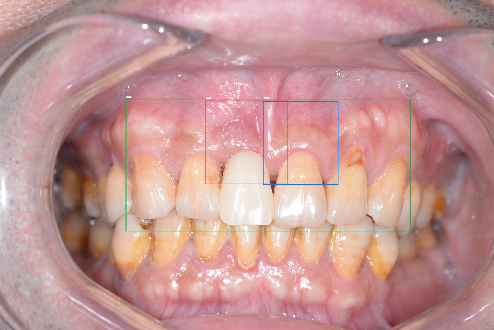
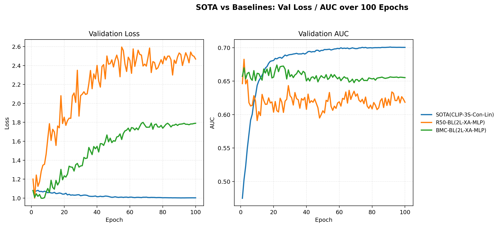
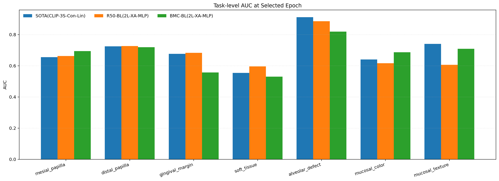

本科毕业设计：PES 多任务分类框架
本文介绍毕业设计中的方法设计、实验设置与主要结果，重点包括共享 7 任务分类主线，以及面向龈缘水平和软组织形态两个困难子项的结构化建模方案。
本文的方法设计分为两条主线。第一条主线是共享的 7 任务多任务分类框架，用于建立 PES 自动评估的统一基线。第二条主线是面向龈缘水平和软组织形态两个困难子项的结构化建模，用于补充纯分类模型在结构关系表达上的不足。
1. 研究主题
本研究面向上颌前牙种植口内照中的 Pink Esthetic Score 自动评估问题。PES 包含近中牙龈乳头、远中牙龈乳头、龈缘水平、软组织形态、牙槽突缺损、黏膜颜色和黏膜质地 7 个评分子项，因此本文将任务建模为共享视觉表征、任务级独立输出的多任务分类问题。
研究方法采用“共享分类主线 + 任务特异结构化补充”的双层设计。共享分类主线用于给出统一的 7 任务基线；结构化补充分别处理龈缘水平的高度关系和软组织形态的轮廓对应关系。
2. 共享分类主线的原理与实现
共享分类主线建立在统一实验基础之上。数据侧整理了评分标签、感兴趣区域标注和患者级数据划分流程，其中 332 个有效样本具备完整的 7 项 PES 标签与 ROI 信息。输入组织同时保留种植位局部区域、对侧天然牙局部区域和前牙整体区域，用于联合表达局部比较与整体协调。
2.1 多任务输出形式
共享分类框架采用“共享编码器 + 共享融合模块 + 任务独立分类头”的结构。7 个子任务共享同一套视觉表征，每个任务单独输出三分类结果。对于第 $t$ 个任务，模型输出可写为：
这一设计的目的，是在有限样本条件下利用共享视觉表征，同时保留每个评分子项的语义边界。
2.2 输入流设计
共享分类实验比较两种输入模式。第一种是 two-local，使用种植位和对照牙两个局部区域。第二种是 three-stream，在两个局部区域之外再加入前牙整体区域。三类感兴趣区域如下图所示。

三流输入不是简单增加一张图，而是把“种植位局部判别”“对照牙镜像参照”和“整体前牙暴露区协调性”同时纳入建模。
2.3 架构搜索空间与训练设置
共享分类主线以现有工作的 ResNet50 双局部输入、交叉注意力融合和线性分类头基线为起点，在统一协议下比较四类因素：输入结构、骨干模型、特征融合方式和分类头设计。24 组架构搜索空间可写为：
- 输入模式：双局部输入、三流输入
- 骨干网络：ResNet50、CLIP ViT、BioMedCLIP ViT
- 特征融合：特征拼接、交叉注意力
- 分类头：线性头、多层感知机头
全部实验采用统一训练协议：患者级 GroupShuffleSplit 划分，训练集和验证集样本数分别为 264 和 68，训练轮数为 100，优化器为 AdamW，初始学习率为 $1\times10^{-4}$，主选模指标为验证集宏平均 AUC。
2.4 损失函数与选模逻辑
由于 7 个子任务的类别分布并不均衡，共享分类主线采用加权交叉熵损失。对第 $t$ 个任务第 $c$ 类，其权重按训练集逆频率定义：
训练结束后不只看峰值 AUC，还看完整训练过程中的最终收敛质量。这一部分的目标不是寻找瞬时最高点，而是筛选能够在完整训练周期内保持稳定收敛的共享基线。
3. 共享分类主线的实验结果
24 组架构实验的训练动态可以分为三类：稳定收敛型、过拟合失稳型和非平滑收敛型。这个划分直接决定了最终的选模标准。
- 输入组织方式会影响比较信息和整体上下文的表达，三流输入优于仅局部输入。
- 骨干模型的整体表现为 CLIP ViT > BioMedCLIP ViT > ResNet50。
- 融合方式与分类头组合比单独更换骨干更能决定训练稳定性。
- 特征拼接与线性头组合在小样本条件下表现出更稳定的收敛行为。

3.1 三类收敛模式
稳定收敛型 的曲线后期平滑、峰终差小，主要集中在 concat + linear 组合中。过拟合失稳型 多出现在 ResNet50 的复杂配置里，表现为验证损失持续抬升、AUC 后期明显回落。非平滑收敛型 主要出现在 CLIP 和 BioMedCLIP 的部分复杂结构中，前期峰值较高，但难以稳定保留到训练结束。


3.2 最终主线模型
最终入选模型为 CLIP ViT + three-stream + concat + linear。该模型的验证集宏平均 AUC 为 0.7004，最佳验证宏平均 AUC 为 0.7009。如果只看瞬时峰值，更复杂的 CLIP 结构可以达到更高分数；但如果看完整训练周期中的稳定收敛质量，三流拼接线性头模型的综合表现更好。



4. 面向龈缘水平的结构化建模
龈缘水平任务关注的是种植侧与对照侧龈缘最高点之间的相对高度差。这一任务具有明确的结构属性，因此本文在共享分类基线结果之外，引入了基于感兴趣区域框提示与 SAM 分割的结构化量化流程。
该流程包括三个核心步骤：第一，基于全局 ROI 和候选牙定位生成稳定的牙体分割结果；第二，在分割结果上估计中切线和校准参考系；第三，检测种植侧与对照侧龈缘最高点，并计算归一化高度差，将连续量测结果映射为离散评分。
4.1 高度差量化公式
设种植侧与对照侧最高点在校准坐标系中的垂直坐标分别为 $z_i^\star$ 和 $z_c^\star$，则绝对高度差定义为：
项目中最终采用的主特征是较小轴高归一化差：
随后通过全局阈值搜索把连续特征映射为三分类标签：
在 240 例筛选通过病例上，该结构化量化方法的 Accuracy 为 0.6042，Macro-F1 为 0.5307；在 196 例人工优质子集上，Accuracy 提升到 0.6480，Macro-F1 提升到 0.5656。这一结果说明，当参考系和边界质量可控时，显式高度差特征能够提供有效的结构判别依据。
5. 面向软组织形态的结构化建模
软组织形态任务比龈缘水平更强调轮廓弧线、局部饱满度和整体外形的一致性。针对这一问题，本文在共享分类基线基础上，进一步构建了面向轮廓比较的结构化分析流程。
该流程同样从 ROI 提示和 SAM 分割开始，先快速得到种植侧与对照侧牙体区域，再提取两侧上缘轮廓，并比较多种对齐与量化策略，包括平移校正、局部窗口搜索和窄带 DTW。
5.1 轮廓比较与对齐公式
最基础的轮廓比较特征是相关性距离。设种植侧轮廓为 $c_i(t)$，镜像后的对照侧轮廓为 $c_c(1-t)$，则相关性距离定义为：
在对齐优化中，本文进一步比较刚性平移和窄带 DTW。窄带 DTW 的作用，不是任意形变，而是在保持顺序的前提下对局部对应关系做受约束的微调。其路径平滑惩罚可写为：
实验结果表明，共享分类基线在软组织形态任务上的 AUC 仅为 0.5548。相比之下，直接轮廓相关性比较的 Accuracy 达到 0.6144，刚性平移对齐达到 0.6208，窄带 DTW 的最佳 Accuracy 提升到 0.6375。这一结果说明，软组织形态任务更依赖轮廓级对齐和量化，而不是一般意义上的 RGB 分类。
6. 结果总结
本文的实验结果支持三点判断。第一，共享多任务分类模型适合作为 PES 自动评估的主线框架，其中 CLIP ViT 三流输入、特征拼接和线性分类头组成的结构在性能和稳定性上表现最好。第二，决定共享分类模型训练稳定性的关键因素不是单一骨干，而是融合方式与分类头组合，其中 concat + linear 最有利于形成平稳收敛。第三，龈缘水平和软组织形态这两个关键子项仅依赖黑盒分类并不充分，引入分割、参考系校正、最高点检测、轮廓提取与曲线对齐等结构化方法，能够提供更直接的解释路径和补充证据。
因此，本文的整体研究方法不是用单一模型覆盖全部问题，而是采用“共享分类主线 + 任务特异结构化补充”的双层设计。这也是本毕业设计最终形成的方法框架。
项目状态： 本科毕业设计项目仍在本地工作区中，尚未作为公开 GitHub 仓库发布。